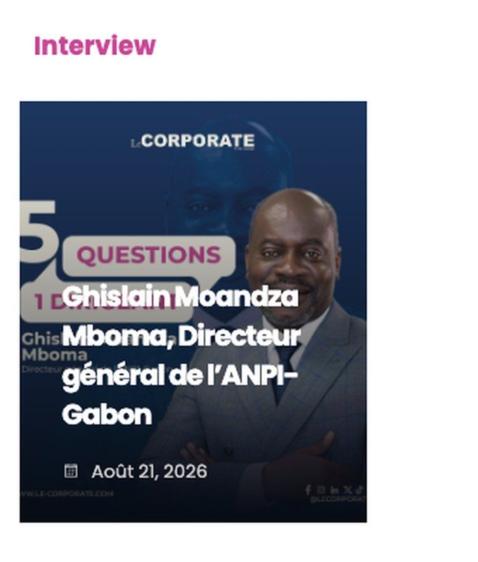
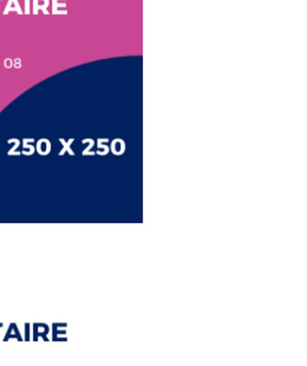

Ce que révèle l'audit, classé par gravité, et ce qu'il faut traiter en premier.
| # | Constat | Gravité | Conséquence directe |
|---|---|---|---|
| 1 | Aucune mention légale, ni politique de confidentialité, ni politique cookies — les quatre URL testées renvoient une erreur 404. Pourtant Google Analytics dépose des cookies de pistage dès l'arrivée du lecteur, sans lui demander son accord. | Critique | Exposition juridique ; organe de presse non identifiable au sens légal |
| 2 | Page d'accueil de 9,35 Mo, dont ~8 Mo d'images. Des photos de 2 560 px sont envoyées pour être affichées en 85 px, et aucune image n'utilise le redimensionnement automatique (srcset). |
Critique | Coût data supporté par le lecteur ; abandon avant affichage |
| 3 | En mode sombre, le corps des articles est noir sur fond noir (contraste mesuré 1,1:1). Le texte devient illisible pour tout lecteur ayant activé ce thème. | Critique | Contenu inaccessible ; lecteur perdu immédiatement |
| 4 | Aucun moyen de contact du pied de page ne fonctionne. Sur les 9 liens qu'il contient : 0 lien e-mail et 0 lien téléphone valides, 4 icônes sociales mortes. Pire, l'adresse de la rédaction publiée — redaction@lecorporate.com, sans tiret — repose sur un domaine qui n'est même pas enregistré. |
Critique | Le lecteur ne peut joindre le journal ; risque d'usurpation |
| 5 | Les pages d'articles ne comportent aucun titre principal (<h1>). Le titre de l'article est balisé en <h3>, sous les blocs du pied de page en <h2>. |
Élevée | Handicap de référencement sur chacun des 1 019 articles |
L'audit ne relève pas que des défauts. Plusieurs choix sont solides et méritent d'être conservés :
un pare-feu anti-robots efficace (LWS/Anubis) qui bloque l'énumération et les attaques automatisées ;
HTTPS correctement imposé avec redirection de http:// et de www ;
les fichiers sensibles (.env, .git, readme.html, journaux de débogage) sont inaccessibles ;
xmlrpc.php est neutralisé ; le mode sombre existe et persiste d'une page à l'autre ;
la mise en page mobile ne déborde pas horizontalement ; le partage WhatsApp est mis en avant,
ce qui est le bon réflexe pour l'audience visée ; et surtout la production éditoriale est réelle et régulière.
Réponse directe à la question posée : de quoi ce site est-il fait, et a-t-il été développé sur mesure ?
Le site tourne sous WordPress 6.3.10. L'empreinte est confirmée par trois sources indépendantes :
les balises generator du code source, l'API REST /wp-json/ ouverte et fonctionnelle,
et les chemins de fichiers /wp-content/ observés dans le trafic réseau réel.
Est-ce « monté de bout en bout » (sur mesure) ? Non. Il s'agit d'un assemblage :
un thème commercial du marché (newzin, thème de magazine d'actualité vendu sur catalogue),
personnalisé via un thème enfant, et complété par un constructeur de pages visuel (Elementor).
Aucun développement spécifique structurant n'a été détecté. C'est un choix légitime et économique,
mais il implique une dépendance forte aux mises à jour de l'éditeur du thème et explique une bonne
partie des problèmes de performance constatés plus loin.
| Composant | Version | Rôle et observation | État |
|---|---|---|---|
| WordPress | 6.3.10 | Socle. La branche 6.3 date d'août 2023 : elle reçoit encore des correctifs de sécurité, mais le site est privé de deux ans d'améliorations de performance et de durcissement. | Périmé |
Thème newzin | — | Thème magazine commercial + thème enfant newzin-child. Charge à lui seul une quarantaine de fichiers JavaScript distincts. | Lourd |
| Elementor | 3.21.7 | Constructeur visuel de pages. Version de mai 2024. | Périmé |
| WooCommerce | 8.5.5 | Boutique en ligne active sans boutique. Charge React, ReactDOM, Lodash et toute la pile de blocs e-commerce sur chaque page — y compris les articles. Aucune fonction marchande n'est visible sur le site. | Inutile |
| Slider Revolution | 6.6.12 | Module de carrousels. Ce composant a connu par le passé des vulnérabilités critiques largement exploitées ; le maintenir à jour est impératif. | À surveiller |
| Yoast SEO | 21.8.1 | Référencement. Correctement configuré (balises, plan de site, données structurées). | OK |
| MonsterInsights | — | Connecteur Google Analytics 4 (G-7EDJHN210F). | Sans consentement |
| Contact Form 7 | 5.9.5 | Module du formulaire de contact, seul réellement utilisé. | Actif |
| WPForms Lite | 1.8.8.3 | Second module de formulaires installé en parallèle, chargé sur toutes les pages mais sans aucun formulaire déployé. Redondance à supprimer. | Redondant |
| Instagram Feed / Redux | 4.4.17 | Flux Instagram et cadriciel d'options du thème. | Présent |
| Élément | Constat |
|---|---|
| Hébergeur | LWS (hébergeur français) — serveurs de noms ns21-24.lwsdns.com, adresse IP 185.135.132.111. Hébergement mutualisé avec cache en périphérie (wpfastestcache). |
| Localisation | Infrastructure européenne. Point d'attention majeur pour l'audience visée : chaque requête d'un lecteur à Libreville traverse l'Europe. La latence s'ajoute au poids de la page — voir section 04. |
| IPv6 | Actif (2a00:7ee0:1:0:3:2246:0:16c) — bon point. |
| HTTP/3 | Annoncé (alt-svc: h3) — bon point, réduit la latence sur réseaux mobiles. |
| Pare-feu | LWS Protection DDoS basée sur Anubis 1.25.0 : défi de calcul JavaScript imposé aux clients automatisés. Très efficace — il a bloqué l'intégralité des tentatives d'analyse par outils en ligne de commande pendant cet audit. |
| Certificat TLS | Let's Encrypt, valide du 21 juillet au 19 octobre 2026, couvrant le domaine et son sous-domaine www. Renouvellement automatique à vérifier. |
| Messagerie | Serveur dédié mail.le-corporate.com (83.229.19.97), SPF strict, DMARC en quarantaine. Voir section 09. |
WooCommerce est installé et actif alors qu'aucune fonction de vente n'existe sur le site.
Conséquence mesurée : sur chaque page, y compris les articles, le navigateur télécharge la bibliothèque
React, ReactDOM 18.2, Lodash et l'ensemble des blocs de commande (wc-blocks-registry,
blocks-checkout, order-attribution). Ce module dépose en outre sept cookies
de pistage publicitaire (sbjs_*, dits « Sourcebuster ») sur le navigateur de chaque
visiteur — un traitement de données personnelles sans finalité ni base légale, puisqu'il n'y a rien à vendre.
Sa désactivation est le geste unique au meilleur rapport gain/risque de tout cet audit.
Ce qui protège correctement le site, et les brèches qui subsistent.
| Test effectué | Résultat | Lecture |
|---|---|---|
/.env (secrets applicatifs) | 403 bloqué | Correct |
/.git/config (code source) | 403 bloqué | Correct |
/wp-config.php.bak | 403 bloqué | Correct |
/wp-content/debug.log | 403 bloqué | Correct |
/readme.html (version WP) | 403 bloqué | Correct |
Listage des répertoires /uploads/ | Bloqué | Correct |
/xmlrpc.php (amplification d'attaques) | 406 bloqué | Correct — supprime un vecteur classique de force brute |
Redirection http:// → https:// | 301 | Correct, mais gérée par PHP plutôt que par le serveur web (voir ci-dessous) |
Divulgation de l'en-tête Server | Masquée | Correct |
L'interface /wp-json/wp/v2/users est ouverte et retourne :
{"id":1,"name":"Le corporate","slug":"admin"}.
Deux problèmes se cumulent. D'abord, l'énumération des comptes est possible : n'importe qui peut obtenir la liste des identifiants de connexion. Ensuite, l'identifiant est « admin », la valeur par défaut la plus attaquée au monde. Un attaquant n'a donc plus qu'une seule inconnue à deviner : le mot de passe. La moitié du travail lui est offerte.
À faire : créer un nouveau compte administrateur avec un identifiant non devinable, transférer les
articles vers ce compte, supprimer le compte admin, puis désactiver l'énumération REST des utilisateurs.
Activer l'authentification à deux facteurs sur les comptes restants.
Le serveur accepte les quatre versions du protocole de chiffrement, dont TLS 1.0 et TLS 1.1, officiellement abandonnés par l'ensemble des navigateurs depuis 2020 et rejetés par les référentiels de sécurité bancaire (PCI-DSS). Ces versions sont vulnérables à des attaques connues (BEAST, POODLE).
À faire : demander à LWS la désactivation de TLS 1.0 et 1.1, et ne conserver que TLS 1.2 et 1.3. Aucun lecteur réel ne sera affecté — aucun navigateur en circulation n'en dépend.
Les huit en-têtes de protection standard ont été testés : les huit sont absents.
| En-tête | État | Ce que son absence autorise |
|---|---|---|
Strict-Transport-Security | Absent | Interception possible lors de la toute première visite (avant redirection) |
Content-Security-Policy | Absent | Aucun garde-fou si un script malveillant est injecté |
X-Frame-Options | Absent | Le site peut être encadré par un tiers (détournement de clic) |
X-Content-Type-Options | Absent | Interprétation abusive de fichiers déposés |
Referrer-Policy | Absent | Fuite d'URL de navigation vers les sites tiers |
Permissions-Policy | Absent | Aucune restriction sur caméra, micro, géolocalisation |
À faire : ces en-têtes s'ajoutent en quelques lignes dans le fichier .htaccess ou via
un module de sécurité. C'est un correctif rapide, à faible risque et à fort rendement.
WordPress 6.3.10, Elementor 3.21.7, WooCommerce 8.5.5 : chacun de ces composants accuse un retard significatif. Sur WordPress, l'essentiel des intrusions réelles ne vise pas le cœur du logiciel mais les extensions non mises à jour. Le site cumule ici huit extensions, dont un constructeur de pages et un module de carrousel historiquement ciblés.
À faire : planifier une campagne de mise à jour sur environnement de test, puis en production, et activer les mises à jour automatiques au moins pour les correctifs de sécurité. Prévoir une sauvegarde restaurable avant toute opération.
L'en-tête X-Redirect-By: WordPress indique que la redirection http → https
est effectuée par PHP, donc après démarrage complet du moteur WordPress. La traiter au niveau du serveur web
(.htaccess) serait plus rapide et plus sûr.
Mesures réalisées sur navigateur réel, connexion filaire. Pour un lecteur mobile gabonais, les chiffres sont nettement plus défavorables.
Le lectorat visé — cadres, dirigeants et décideurs gabonais — consulte massivement depuis un téléphone, sur un forfait où le mégaoctet a un coût réel et se décompte.
Dans ces conditions : une seule consultation de la page d'accueil consomme environ 9,35 Mo. Une centaine de visites dans le mois représentent donc près d'un gigaoctet du forfait du lecteur, pour une page de titres d'actualité. À titre de comparaison, une page d'accueil de site de presse correctement optimisée se situe entre 1 et 2 Mo.
S'y ajoute un facteur aggravant mesuré : les images ne portent aucune consigne de cache navigateur
(aucun en-tête Cache-Control). Le navigateur doit donc revalider chaque image auprès du serveur
européen à chaque visite — soit une cinquantaine d'allers-retours supplémentaires, à chaque fois,
depuis Libreville.
Sur 51 images chargées à l'accueil, le total atteint 7,96 Mo. Quatre défauts se cumulent :
| Défaut mesuré | Ampleur | Explication |
|---|---|---|
| Images surdimensionnées | Ratio 30:1 | Des photos de 2 560 px de large sont envoyées pour être affichées en 85 px. Le navigateur télécharge 30 fois plus de pixels que nécessaire. Exemple relevé : une image de 775 Ko pour une vignette. |
| Aucune image adaptative | 0 sur 64 | Aucune image n'utilise l'attribut srcset. WordPress le génère pourtant automatiquement : le thème neutralise ce mécanisme. Conséquence : un téléphone reçoit exactement les mêmes fichiers qu'un grand écran. |
| Format obsolète | 100 % JPEG/PNG | Aucune image en WebP ou AVIF. La conversion réduirait le poids de 30 à 50 % sans perte visible. |
| Chargement différé quasi absent | 5 sur 64 | 59 images sont téléchargées immédiatement, y compris celles situées très bas dans la page, que la majorité des lecteurs ne verra jamais. |
| Dimensions non déclarées | 62 sur 64 | Sans attributs width/height, la page « saute » pendant le chargement : le lecteur perd sa ligne ou clique à côté. |
Les noms de fichiers sont éloquents : WhatsApp-Image-2026-09-03-at-10.36.47.jpeg,
WhatsApp-Image-2026-08-13-at-02.13.10.jpeg… La chaîne de production éditoriale consiste
manifestement à recevoir la photo par WhatsApp et à la téléverser directement dans WordPress,
sans redimensionnement ni compression.
Au-delà du poids, cette pratique a trois autres conséquences : les noms de fichiers ne portent aucun
mot-clé exploitable pour le référencement des images ; aucune métadonnée de crédit photo n'est
attachée, ce qui est problématique pour un organe de presse au regard du droit d'auteur ; et la même image
de couverture est réutilisée en partage social (balise og:image) dans sa version brute.
92 fichiers JavaScript et 16 feuilles de style sont chargés séparément, sans regroupement. Plusieurs bibliothèques sont chargées en double, le thème et son extension embarquant chacun leur copie :
swiper.min.js — chargé deux fois (thème + extension newzin_plugin)wow.min.js — chargé deux foisbootstrap.min.js et bootstrap.bundle.min.js)Sur la page d'article, la situation est identique : 91 fichiers JavaScript, WooCommerce et Slider Revolution compris, pour afficher 373 mots de texte.
Les corrections listées en section 10 — recompression des images, activation du srcset,
conversion WebP, désactivation de WooCommerce, regroupement des scripts, cache des images —
permettent raisonnablement de ramener la page d'accueil sous les 2 Mo et le premier affichage
sous les 2 secondes, sans toucher ni à la maquette ni au contenu.
C'est une division du poids par quatre à cinq.
Rendu constaté sur écran large, sur mobile 375 px, et dans les deux thèmes clair et sombre.
La maquette est soignée et professionnelle. La hiérarchie typographique est lisible, le traitement
des titres est affirmé, la palette (bleu marine #002060 / magenta #c74794) est
cohérente et distinctive. Visuellement, le site tient son rang de publication économique.
Vérification menée en émulation d'un écran de 375 × 812 px dans un navigateur réel, avec rechargement complet de la page. Résultats mesurés :
| Critère mesuré | Valeur | Verdict |
|---|---|---|
| Largeur du document vs écran | 375 / 375 px | Conforme — aucun défilement latéral |
| Débordement horizontal | 0 px | Conforme — carrousels bien confinés |
Méta-balise viewport | présente | Conforme |
| Bascule du menu en hamburger | effective | Conforme |
| Langue du document | fr-FR | Conforme |
| Cibles tactiles < 40 px | 154 / 220 | À revoir |
| Images adaptées à l'écran | 0 / 64 | Non conforme — mêmes fichiers qu'en version bureau |
Bon point — aucun débordement horizontal. Le test mesuré à 375 px donne une largeur de document strictement égale à celle de l'écran (375 px) : la page ne défile pas latéralement, défaut pourtant très fréquent. Les carrousels sont correctement confinés.
La méta-balise viewport est bien présente, la langue du document est déclarée
(lang="fr-FR"), et le menu bascule proprement en hamburger.
Réserve — les cibles tactiles. Sur 220 éléments interactifs, 154 mesurent moins de 40 px dans au moins une dimension. Une partie relève de liens en ligne dans le texte (tolérable), mais les icônes sociales, les pastilles de rubrique et le sélecteur de thème sont concernés, alors qu'ils sont conçus pour être touchés au doigt. Le seuil recommandé est de 44 px.
Réserve — le poids. La mise en page mobile est réussie, mais elle sert les mêmes images pleine résolution que la version bureau (voir section 04). La responsivité visuelle est là ; la responsivité technique ne l'est pas.
Le serveur renvoie un en-tête Vary: User-Agent et le cache (wpfastestcache)
distingue les variantes bureau et mobile. Ce mécanisme fonctionne, mais il multiplie les versions à
maintenir en cache et rend le comportement du site plus difficile à vérifier depuis l'extérieur.
À garder à l'esprit lors des tests de recette après correction.
Le site propose un sélecteur clair/sombre, fonctionnel et dont le choix persiste d'une page à l'autre. Mais une fois le mode sombre activé, le corps des articles reste en texte noir sur le fond sombre.
Reproduction fidèle des valeurs mesurées sur le site : texte rgb(0,0,0) sur fond
rgb(12,15,22). Rapport de contraste : 1,1:1 — le minimum exigé est de 4,5:1.
Constat confirmé visuellement sur la page d'article.
Origine probable : le texte des articles porte une couleur noire explicite, héritée d'un copier-coller depuis un traitement de texte ou une messagerie. Cette couleur en dur écrase la règle d'affichage du thème sombre. Le lien « Article précédent » est touché de la même manière (bleu marine sur fond noir, contraste 1,26:1).
Tout lecteur ayant activé le mode sombre — souvent par confort ou pour économiser sa batterie — ne peut pas lire les articles. Il ne signalera pas le bug : il quittera le site. Le correctif est simple (purge des couleurs en dur dans le contenu et règle CSS de repli en mode sombre) mais il doit être traité en priorité.

Le titre de la rubrique Interview est affiché en blanc, posé directement sur l'image de fond, sans voile d'assombrissement. Deux conséquences observées :
Correctif : ajouter un voile dégradé sombre sous le texte, ou une couleur de fond de repli, et cesser d'utiliser des visuels comportant déjà du texte incrusté sous un titre HTML.

Capacité du site à être consulté au clavier, par un lecteur d'écran, ou par une personne malvoyante.
| Critère | Constat | Portée |
|---|---|---|
| Lien d'évitement (« Aller au contenu ») | Absent | Un utilisateur au clavier doit parcourir l'intégralité des 220 éléments du menu avant d'atteindre l'article. Sur chaque page. |
Repère <main> | Absent | Aucun repère de contenu principal : un lecteur d'écran ne peut pas sauter directement à l'article. |
Repère <header> | Absent | Structure de page non annoncée. |
| Liens sans intitulé | 23 | 23 liens n'ont ni texte, ni aria-label, ni image décrite. Un lecteur d'écran annonce « lien », sans plus. |
| Sélecteur de thème clair/sombre | Inutilisable | Construit avec des balises <span> sans role, sans aria-label et sans tabindex : impossible à atteindre ou à activer au clavier, invisible pour un lecteur d'écran. |
| Hiérarchie des titres | Incohérente | 9 <h1> sur l'accueil, aucun sur les articles, et 8 sauts de niveau. Le plan du document est inexploitable. |
| Contrastes insuffisants | 13 cas | Voir le détail ci-dessous. |
| Cibles tactiles < 40 px | 154 / 220 | Précision de pointage exigée trop élevée sur mobile. |
| Champ de recherche sans étiquette | 1 | Seul un placeholder est fourni, insuffisant. |
Attributs alt des images | Conformes | Aucune image dépourvue d'attribut ; 2 vides seulement. Bon point. |
| Langue du document | fr-FR | Correctement déclarée. Bon point. |
| Étiquettes du formulaire de contact | Liées | Correctement associées aux champs. Bon point. |
| Élément | Mesuré | Requis | Lecture |
|---|---|---|---|
| Titre de la rubrique Interview | 1,0 | 3,0 | Invisible |
| Libellé « Linkedin » (icône sociale) | 1,3 | 4,5 | Invisible |
Dates des articles (gris #ccc) | 1,6 | 4,5 | Quasi illisible |
Chapôs des articles (gris #999) | 2,5 | 4,5 | Pénible à lire |
| Adresses e-mail du pied de page | 2,7 | 4,5 | Pénible — or c'est l'information de contact |
| Pastilles de rubrique (blanc sur magenta) | 4,4 | 4,5 | Juste sous le seuil — corrigeable en assombrissant légèrement le magenta |
Ces corrections ne bénéficient pas qu'aux personnes en situation de handicap. Un contraste insuffisant devient franchement illisible en plein soleil sur un téléphone — condition de lecture ordinaire à Libreville. Et les moteurs de recherche exploitent la structure des titres et les repères sémantiques pour comprendre les pages : l'accessibilité et le référencement se corrigent ici d'un même geste.
Ce qui est correctement en place, et ce qui prive le site d'audience.
robots.txt correct, plan de site déclaré, aucun blocage d'indexation involontaire.Organization, WebSite, BreadcrumbList, Article, Person.| Point | Gravité | Constat et correctif |
|---|---|---|
Aucun <h1> sur les articles | Élevée | Le titre de l'article est balisé <h3>. Les blocs du pied de page (« Régie commerciale », « Rédaction ») sont en <h2> et dominent donc le titre de l'article dans la hiérarchie du document. Défaut répliqué sur les 1 019 articles. À corriger dans le gabarit du thème enfant. |
9 <h1> sur l'accueil | Moyenne | Situation symétriquement inverse : la page d'accueil dilue son sujet sur neuf titres principaux. Un seul doit subsister. |
Schéma Article au lieu de NewsArticle | Moyenne | Pour un organe de presse, le type NewsArticle est celui attendu par Google Actualités et Discover. Réglable dans Yoast (type de contenu par défaut). |
| Pas de plan de site « Actualités » | Moyenne | /news-sitemap.xml renvoie 404. C'est le fichier qu'attend Google Actualités pour indexer rapidement les publications récentes. Indispensable pour une candidature à Google News. |
| Aucune balise Twitter Card | Moyenne | Absentes sur les articles testés. Le partage sur X s'affiche en lien brut, sans visuel. |
| Métadescription absente sur l'accueil | Moyenne | La page d'accueil n'a aucune meta description : Google compose lui-même l'extrait affiché, à partir de fragments de widgets. Elle est également absente sur une partie des articles — la couverture est incohérente. |
| Titre d'accueil trop court | Moyenne | « Accueil - Le Corporate » — 22 caractères, sans aucun mot-clé. C'est la page la mieux positionnée du site : elle devrait porter le positionnement (ex. « Le Corporate — L'actualité économique et des entreprises au Gabon »). |
| Image de partage de l'accueil inadaptée | Moyenne | La balise og:image de l'accueil pointe vers le logo en 118 × 153 px, au format portrait. Partagé sur WhatsApp ou LinkedIn, le lien s'affiche avec une vignette minuscule et déformée. Format attendu : 1 200 × 630 px. |
| Titres d'articles trop longs | Faible | 115 et 136 caractères sur les articles testés : Google tronque au-delà d'environ 60. Le titre affiché en résultat de recherche est donc coupé. |
| Aucune signature de journaliste | Moyenne | Les 50 derniers articles sont tous attribués au même compte unique (« Le corporate », /author/admin/). Aucun auteur nommé n'apparaît. Pour un média, la signature est un signal de crédibilité — et Google Actualités valorise explicitement les pages d'auteur identifiées. |
| Fil d'Ariane incomplet | Faible | Le BreadcrumbList des articles ne comporte pas le niveau « Accueil ». |
| Plan de site des fichiers joints | Faible | Deux fichiers attachment-sitemap proposent à l'indexation les pages de pièces jointes — pages sans contenu réel. À désactiver dans Yoast. |
| Vitesse de chargement | Élevée | Rappel : 4,46 s de premier affichage et 9,35 Mo. Les signaux de performance (Core Web Vitals) sont un critère de classement, et la mise en page « saute » faute de dimensions d'images déclarées. |
Le domaine le plus déficitaire de l'audit. Les constats ci-dessous sont factuels ; leur qualification juridique définitive relève d'un conseil habilité.
Les URL suivantes ont été testées une à une : toutes renvoient une erreur 404.
| Page attendue | Résultat | Page attendue | Résultat |
|---|---|---|---|
/mentions-legales/ | 404 | /cgu/ | 404 |
/politique-de-confidentialite/ | 404 | /cookies/ | 404 |
/privacy-policy/ | 404 | /conditions-generales/ | 404 |
/politique-de-cookies/ | 404 | /editeur/, /equipe/ | 404 |
Seules /a-propos/, /contacts/ et /contact/ répondent. Le pied de page
renvoie bien vers « L'équipe », « Editeur » et « Blog de l'agence », mais ces destinations n'existent pas.
Dès l'ouverture de la page d'accueil, et avant toute action du lecteur, les cookies suivants sont déposés sur son navigateur :
_ga et _ga_7EDJHN210F — Google Analytics 4, identifiant de mesure G-7EDJHN210Fsbjs_migrations, sbjs_current, sbjs_first, sbjs_current_add,
sbjs_first_add, sbjs_udata, sbjs_session — sept cookies d'attribution
publicitaire déposés par WooCommerce, sur un site qui ne vend rienDes données sont effectivement transmises à googletagmanager.com et
region1.google-analytics.com.
Aucune bannière de consentement n'est affichée, et le mécanisme de la panne a pu être identifié
précisément. Le thème embarque un fichier gdpr.js, effectivement chargé, dont le code cherche
un élément .newzin-gdpr à faire apparaître :
const gdprBar = $('.newzin-gdpr');
if (!newzinGetCookie('newzin_gdpr')) { gdprBar.fadeIn('300'); }
Or cet élément n'existe nulle part dans la page : la sélection est vide, et l'ordre d'affichage s'applique à rien. La brique de consentement est installée mais n'a jamais été activée — le site se comporte donc exactement comme s'il n'en avait aucune, pendant que Google Analytics, lui, se déclenche dès le chargement.
Le cumul « cookies de mesure déposés sans accord » + « aucune politique de confidentialité » + « aucune information sur le traitement » constitue un manquement au regard du RGPD pour tout lecteur européen, et de la loi gabonaise n°001/2011 relative à la protection des données à caractère personnel (autorité de contrôle : la CNPDCP).
Un organe de presse doit pouvoir être identifié par son lecteur. Le site indique bien une localisation (« Centre ville », sans adresse postale précise), un téléphone (+241 77 86 10 08), des adresses e-mail et l'éditeur « Up Concept ». En revanche, ne sont mentionnés nulle part — ni sur le site, ni dans la plaquette commerciale officielle de 10 pages téléchargeable depuis le pied de page :
Le site se présente comme « une plateforme numérique d'information sur les entreprises » créée en janvier 2023 : ces mentions sont la contrepartie normale de cette qualité.
| Point vérifié | État | Observation |
|---|---|---|
| Transmission chiffrée (HTTPS) | OK | Envoi en POST sur HTTPS. |
| Étiquettes des champs | OK | Correctement associées. |
| Case de consentement | Absente | Aucune case n'informe l'utilisateur de l'usage de ses données. |
| Mention sur le traitement | Absente | Aucun texte sur la finalité, la durée de conservation ou les droits d'accès. |
| Champs obligatoires | OK | Nom, e-mail et sujet sont bien obligatoires — via le mécanisme propre à Contact Form 7 (validation serveur), et non l'attribut HTML5 required. Conséquence mineure : pas de validation native du navigateur avant envoi. |
| Protection anti-robot | Faible | Seul un piège à robots (honeypot Akismet) est présent. Aucun CAPTCHA visible. Une option de CAPTCHA existe dans la configuration Elementor mais aucun script n'est réellement chargé : la protection est dormante. |
Volumétrie réelle, cohérence entre ce que le menu promet et ce que le lecteur obtient.
Avec 1 019 articles, 542 publications sur les douze derniers mois et 34 sur les trente derniers jours, la rédaction tient un rythme d'environ 1,1 article par jour ouvré. Les sujets relevés sont de fond et à valeur ajoutée : dette publique du Congo, masse monétaire CEMAC, rachat de Tullow Oil, convention minière de Baniaka, inclusion financière. C'est un actif éditorial réel — et c'est précisément ce que les défauts techniques empêchent d'exploiter.
La répartition des 1 019 articles entre les rubriques est très concentrée :
| Rubrique | Articles | Part | Observation |
|---|---|---|---|
| Editorial | 904 | 88,7 % | Fourre-tout de fait |
| Dossier spécial | 30 | 2,9 % | Rubrique vivante |
| Big deal | 24 | 2,4 % | Rubrique vivante |
| Non classé | 15 | 1,5 % | À reclasser — catégorie technique par défaut |
| Intelligence économique & Fortune d'Afrique | 9 | 0,9 % | — |
| Femme dirigeante / Leader | 8 / 8 | 1,6 % | — |
| Tribune | 6 | 0,6 % | — |
| Formation / Technologie | 4 / 4 | 0,8 % | — |
| Docuthèques, Entreprendre, Innovation, Interview, Réglementations | 1 chacune | 0,5 % | Rubriques symboliques |
| Startup, Graine de manager, Séminaires | 0 | 0 % | Vides — voir ci-dessous |
Trois rubriques du menu ne contiennent aucun article : Startup, Graine de manager et Séminaires. Or, en les ouvrant, le lecteur ne voit ni message d'absence de contenu, ni page vide : le site lui sert le flux générique des dernières actualités.
Concrètement, un lecteur qui clique sur « Startup » pour lire des sujets sur l'entrepreneuriat obtient des articles sur l'affaire Bosch Capital, le Forum de l'épargne et le budget de la Nation. La promesse de navigation n'est pas tenue, et le lecteur ne comprend pas pourquoi.
Aggravant : ce flux de repli est titré « Our Journal — Get the latest articles », chaînes du thème restées en anglais sur un site francophone.
Le thème n'est que partiellement traduit, et la navigation comporte des fautes visibles :
| Constat | Occurrences | Correction attendue |
|---|---|---|
| « Views » sur la page d'accueil | 24 | « vues » |
| « Posted » / « By » sur l'accueil | 10 / 10 | « Publié le » / « Par » |
| « Our Journal » / « Get the latest articles » | pages de rubrique | À traduire |
| « Categories » | accueil + articles | « Catégories » |
| « Sucess story » dans le menu principal | 1 | « Succès story » — double faute, très visible |
| « Succes story » sans accent | 2 | « Succès » |
| « Reglémentations » | 3 | « Réglementations » — accent mal placé |
| « A propos » sans accent | 2 | « À propos » |
Pour une publication qui s'adresse à des dirigeants et à des institutions financières, des fautes d'orthographe dans la barre de navigation entament directement la crédibilité. Le coût de correction est de quelques minutes.
Le pied de page affiche des coordonnées complètes — deux e-mails, un téléphone répété deux fois, quatre icônes de réseaux sociaux. Inspection des 9 liens qu'il contient : un seul fonctionne.
| Ce que le lecteur voit | Lien réellement posé | Résultat au clic |
|---|---|---|
info@le-corporate.com | href="" (vide) | Ne fait rien |
redaction@lecorporate.com | /a-propos/ | Ouvre « À propos » au lieu du courriel |
| +241 77861008 (×2) | http://a%20href=tel=+24177861008/ | Lien malformé — balise HTML imbriquée par erreur |
| Linkedin, Youtube et 2 icônes | #0 (×4) | Liens morts |
| « L'équipe », « Editeur » | aucune balise de lien | Texte inerte |
| Media kit (plaquette PDF) | /uploads/2024/01/Plaquette…pdf | Fonctionne |
Bilan : 0 lien mailto: et 0 lien tel: valides sur tout le pied de page.
Un lecteur sur mobile qui touche le numéro de téléphone n'appelle pas ; un annonceur qui clique sur
l'adresse commerciale n'ouvre pas sa messagerie ; qui cherche le journal sur LinkedIn n'arrive nulle part —
alors que les comptes existent réellement (ils figurent dans les données structurées du site).
À faire : reprendre le bloc de pied de page — mailto: et tel: corrects,
URL réelles des réseaux sociaux, et suppression ou activation des entrées « L'équipe » et « Editeur ».
Correction d'une heure, à fort effet.
Le pied de page et la page Contacts publient redaction@lecorporate.com —
sans tiret — alors que le site est le-corporate.com, avec tiret.
Vérification DNS du domaine lecorporate.com : aucun enregistrement A, aucun
enregistrement MX, aucun serveur de noms (réponse NXDOMAIN). La consultation du registre
public confirme : « No match for domain LECORPORATE.COM » — le domaine n'est pas seulement mal
configuré, il n'a jamais été déposé et reste libre à l'enregistrement par n'importe qui.
Deux conséquences :
À faire immédiatement : corriger l'adresse en redaction@le-corporate.com partout,
vérifier que cette boîte existe, et déposer le domaine lecorporate.com à titre défensif
pour le rediriger vers le domaine officiel.
| Mécanisme | État | Constat |
|---|---|---|
| SPF | Correct | v=spf1 mx:le-corporate.com a:mail.le-corporate.com a:mailphp.lws-hosting.com -all — politique stricte. Bien configuré. |
| DMARC | Incomplet | v=DMARC1; p=quarantine; — la politique existe, mais sans adresse de rapport (rua=) : la rédaction ne reçoit aucune alerte en cas de tentative d'usurpation de son domaine. |
| DKIM | Introuvable | Aucun sélecteur courant ne répond. Sans signature DKIM, les messages transférés perdent leur authentification et risquent le classement en indésirable — problématique pour une newsletter ou un envoi de communiqués. |
Classement par rapport bénéfice/effort. Les priorités 0 sont traitables en une journée de travail cumulée.
Remplacer redaction@lecorporate.com par redaction@le-corporate.com et vérifier
que la boîte reçoit. Rétablir de vrais liens mailto: et tel:, brancher les quatre
icônes sociales sur les comptes réels (Facebook, LinkedIn, WhatsApp existent déjà), traiter les entrées
mortes « L'équipe » et « Editeur ». Déposer lecorporate.com à titre défensif.
Purger les couleurs de texte en dur dans le contenu des articles et ajouter une règle CSS de repli forçant une couleur claire sur le corps de texte en mode sombre. Traiter aussi le lien « Article précédent ».
Créer les deux pages et les lier depuis le pied de page : identité et raison sociale de l'éditeur, directeur de publication, coordonnées, hébergeur, référence HAC, finalités de traitement des données, durée de conservation, droits d'accès et de rectification, usage des cookies.
Aucune fonction marchande n'existe. Sa désactivation supprime d'un coup la pile React, les blocs de commande et sept cookies de pistage déposés sans base légale. Geste au meilleur rendement de l'audit.
Créer un administrateur au nom non devinable, y transférer les articles, supprimer le compte
admin, bloquer l'énumération REST des utilisateurs, activer la double authentification.
« Sucess story » → « Succès story » ; « Reglémentations » → « Réglementations » ; « A propos » → « À propos ».
Recompresser la médiathèque, régénérer les tailles intermédiaires, rétablir le srcset
neutralisé par le thème, activer la conversion WebP, étendre le chargement différé et déclarer les
dimensions. Objectif : page d'accueil sous 2 Mo.
Instaurer en parallèle une consigne de rédaction : aucune photo WhatsApp publiée telle quelle — redimensionnement à 1 600 px maximum, renommage descriptif, crédit photo renseigné.
Configurer une bannière qui bloque le dépôt de Google Analytics tant que le lecteur n'a pas accepté,
avec refus aussi accessible que l'acceptation. La brique gdpr.js est déjà présente dans le thème.
<h1> sur les articlesModifier le gabarit du thème enfant pour que le titre de l'article soit un <h1> unique,
et rétrograder les titres du pied de page. Réduire l'accueil à un seul <h1>.
Bénéfice sur les 1 019 articles.
Définir Strict-Transport-Security, X-Frame-Options,
X-Content-Type-Options, Referrer-Policy et Permissions-Policy
via .htaccess. Demander à LWS la désactivation de TLS 1.0 et 1.1.
Sur environnement de test puis en production : WordPress, Elementor, Slider Revolution et le thème. Activer ensuite les mises à jour automatiques de sécurité. Supprimer l'un des deux modules de formulaires.
Soit retirer du menu Startup, Graine de manager et Séminaires, soit les alimenter. Dans tous les cas, remplacer le flux générique de repli par un véritable message d'absence de contenu. Reclasser les 15 articles « Non classé » et redistribuer une partie des 904 articles « Editorial ».
| Action | Détail |
|---|---|
| Accessibilité | Ajouter un lien d'évitement, un repère <main>, convertir le sélecteur de thème en <button> avec aria-label, nommer les 23 liens sans intitulé, relever les contrastes faibles. |
| Candidature Google Actualités | Générer un plan de site « news », basculer le schéma en NewsArticle, ajouter les balises Twitter Card, créer de vraies signatures de journalistes avec pages d'auteur, publier l'ours complet — autant de conditions d'éligibilité. |
| Métadonnées de partage | Rédiger une meta description pour l'accueil, allonger son <title> avec le positionnement, et remplacer l'og:image de l'accueil (118 × 153 px) par un visuel 1 200 × 630 px. |
| Regroupement des ressources | Fusionner et différer les 92 fichiers JavaScript, supprimer les doublons (swiper, wow, bootstrap), purger le CSS inutilisé. |
| Cache des images | Définir un Cache-Control longue durée sur /wp-content/uploads/ — gain majeur pour le lecteur mobile qui revient. |
| Traduction du thème | Traduire « Views », « Posted », « By », « Our Journal », « Categories ». |
| Emplacements publicitaires | Remplacer les gabarits « 250 X 250 » par des visuels d'auto-promotion. |
| Commentaires | Masquer le compteur « 0 Commentaires », ou animer réellement l'espace. |
| DKIM et rapports DMARC | Activer la signature DKIM chez LWS et ajouter une adresse rua= au DMARC. |
| Diffusion en périphérie | À terme, un réseau de diffusion de contenu rapprochera les fichiers des lecteurs africains et réduira la latence depuis l'Europe. |
Audit conduit le 11 septembre 2026 en boîte noire : sans accès à l'administration WordPress, sans accès au serveur, sans code source privé. Toutes les constatations proviennent de ce qu'un visiteur ou un moteur de recherche peut observer publiquement.
X-WP-Total), et non d'une estimation.1. Le pare-feu a restreint l'analyse automatisée. La protection LWS/Anubis impose un défi de calcul JavaScript. Les outils en ligne de commande ont donc été bloqués en cours d'audit, et l'ensemble des constatations a dû être reprise via un navigateur réel. C'est un bon signal de sécurité pour le site, mais cela signifie que certaines vérifications de masse n'ont pas pu être menées à grande échelle.
2. Les mesures de performance sont optimistes. Elles ont été réalisées sur une connexion filaire rapide. Sur un réseau mobile gabonais, les durées constatées seront sensiblement supérieures, et le poids de 9,35 Mo pèsera d'autant plus.
3. Les versions des extensions sont celles déclarées par le site lui-même. Des correctifs de sécurité peuvent avoir été appliqués sans changement de numéro de version. Aucune vulnérabilité n'a été testée activement ; l'analyse se fonde sur l'ancienneté déclarée des composants.
4. Les constats de conformité sont factuels, non juridiques. L'absence de mentions légales, de politique de confidentialité et de consentement aux cookies est établie par l'observation. Leur qualification au regard du droit gabonais de la presse et de la loi n°001/2011 relève d'un conseil juridique habilité.
| Indicateur | Mesuré | Cible |
|---|---|---|
| Poids de la page d'accueil | 9,35 Mo | < 2 Mo |
| Poids des images | 7,96 Mo | < 1 Mo |
| Premier affichage (FCP) | 4,46 s | < 1,8 s |
| Requêtes réseau | 169 | < 60 |
| Fichiers JavaScript | 92 | < 15 |
Images avec srcset | 0 / 64 | 64 / 64 |
| Images en chargement différé | 5 / 64 | > 50 |
| En-têtes de sécurité | 0 / 8 | 6 / 8 |
| Pages légales publiées | 0 / 4 | 4 / 4 |
<h1> par page d'article | 0 | 1 |
| Échecs de contraste (mode clair) | 13 | 0 |
| Contraste du texte en mode sombre | 1,1:1 | ≥ 4,5:1 |
| Débordement horizontal à 375 px | 0 px | 0 px |
| Articles publiés | 1 019 | — |
| Rythme sur 12 mois | 542 | — |